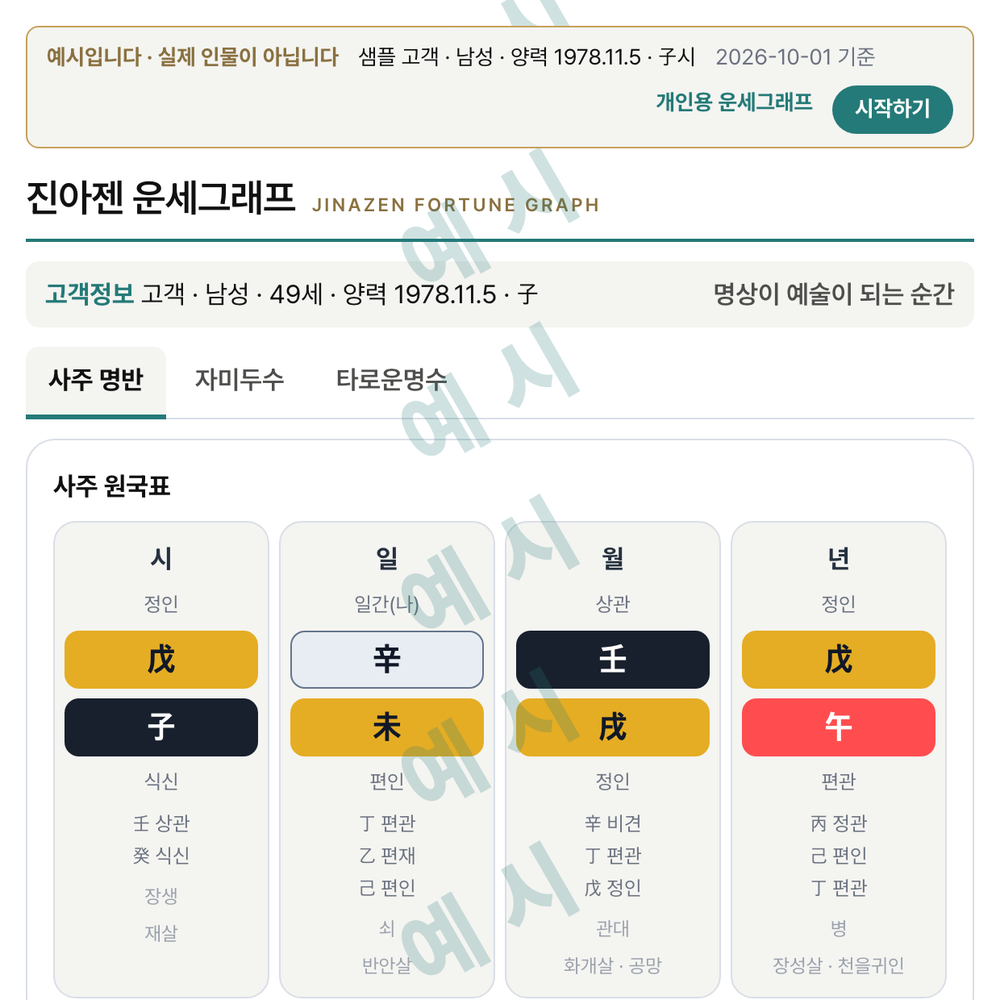
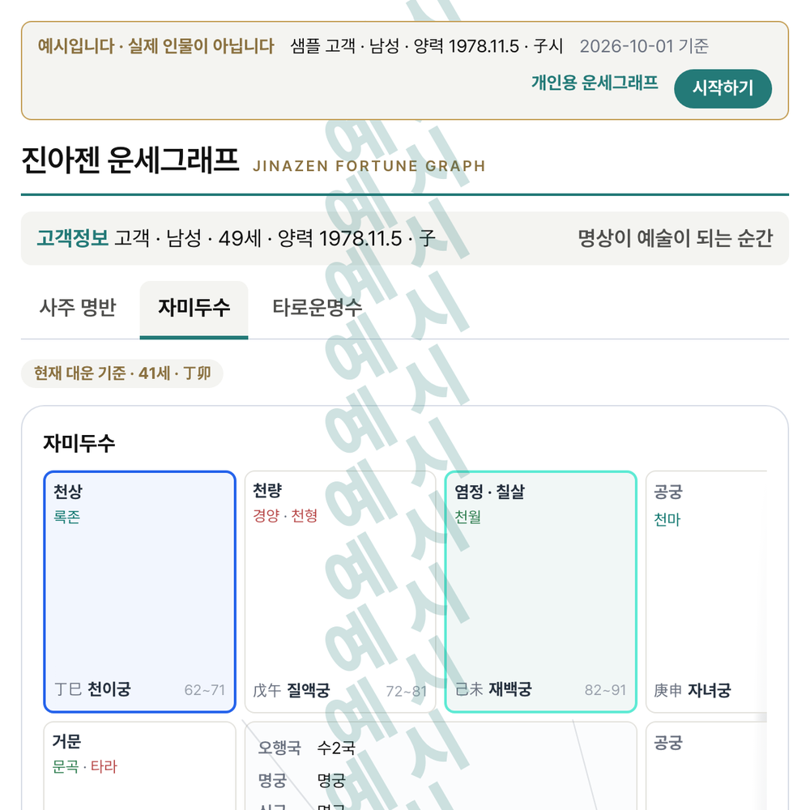
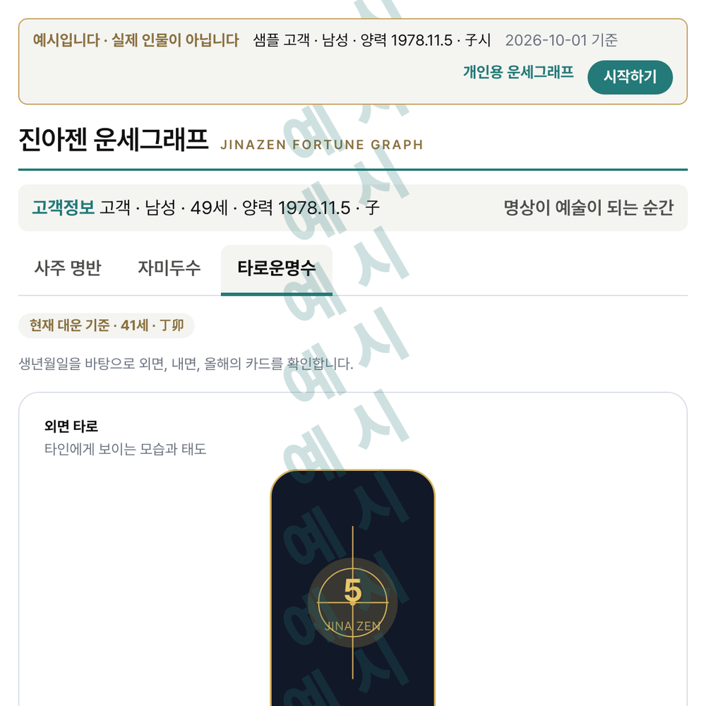

Personal Fortune Graph
With just your date of birth, see your Saju natal chart, Zi Wei Dou Shu chart and Tarot destiny numbers, and read the flow of your life through your own Fortune Graph.

The moment meditation becomes art

Everyday worries can make it hard to settle straight into meditation.
We read fortune the way one reads a weather forecast — to accept life's rises and falls,
set down attachment and comparison, and notice the natural flow of things.
A person is a small universe that holds the principles of yin-yang and the five elements.
JINAZEN reads the blueprint of that universe
as an aid to harmony and balance in life.
Understanding the flow of life first can help the mind grow calmer.
When we make time for ourselves and seek the true self through meditation,
life can be shaped anew, like a work of art.
With just your date of birth, see your Saju natal chart, Zi Wei Dou Shu chart and Tarot destiny numbers, and read the flow of your life through your own Fortune Graph.
This service is in Korean · a Kakao account is required



Pay once and you can keep coming back to it. It is not a subscription.
A place to experience the JINAZEN philosophy with your body
The sun rising over the East Sea, Seoraksan and Lake Yeongnang. JINAZEN's space sits in the natural energy of Yeongnang Beach in Sokcho.
Here, no one reads your destiny for you. Enter your date of birth at the kiosk and your Fortune Graph prints on paper — you read that flow yourself.
Following the fortune-boosting advice, you choose the goods and herbal tea that suit you, touch the Golden Beak and make a wish, and quiet your mind in the meditation space.
A place to find art in meditation. A space where you find yourself, by yourself.
Opening soon


CREATED BY A MEDITATION ARTIST
Made for practitioners and counselors who want to handle Saju, Zi Wei Dou Shu and Tarot consultations in one program.
A consultation solution built for professionals
The download is free. One purchase inside the app keeps it — this is not a subscription.
The app interface is currently in Korean. An English UI is in preparation.
Saju does not stop at eight characters —
it continues into the Fortune Graph.
With the North Star at the centre, stars are placed
across twelve palaces to read each domain of life.
A destiny number from the birth date draws three cards —
the inner, the outer, and the year ahead.
Opening a manseryeok, checking Zi Wei Dou Shu and drawing tarot, each on its own — now finished on one screen.
Move between Saju, Zi Wei Dou Shu and Tarot in one solution.

Setting the eight characters and drawing the flow — the app does that.
What it means for this particular person — you say that.


MEDITATION ARTIST
A journey toward meditation
Writing fairy tales for grown-ups,
inventing with IT,
drawing a life as a fortune graph,
and placing meditation at the end, with teas that settle the mind.
Golden Beak is a lucky character drawn from the sun bird of Korean tradition — touch its beak and a wish comes true. Born inside a story, it came to live in the everyday as a warm companion.
Invented a book-shaped Android device and a bookshelf dock, ran an advertising platform on them, founded companies in Korea and Japan, and deployed a cumulative 10,000 units across both countries. Partnerships with Canon, Lotte and Gong Cha; co-inventor of a charging-device patent.
Seeing tea as a small ritual of looking into the mind, she blended four meditation teas herself. Museum Therapy “Chill your soul” meditation exhibition at the Seoul Arts Center (2025); the solo meditation chair and the companion chair at Yongyeonjeong, Bogwangsa temple by Lake Yeongnang in Sokcho.
日 月 星
The spiritual archetype of a people who looked up at the sky, held in three cups.
A tea of the sun, a tea of the moon, a tea of the North Star.
Herbal teas for meditation, designed along the theory of Eastern medicine.


Dongwoo Cha (東友茶) · East Friends · 2 technology patents · HACCP
View at East Friends ↗A space where guests linger, and come back
A guest enters their date of birth at the kiosk, and the fortune graph comes out on paper.
They read their own flow, pick the tea and goods that suit them, and stay a while.
JinaZen brings that experience to your store, just as it is.
Terms of adoption are arranged to suit each store
Enquiry → store visit and consultation → installation and training → opening
The moment meditation becomes art.
JINAZEN is a place where anyone can find their own art through meditation.
Read the flow of your life with the Fortune Graph, then stay in that flow with tea and meditation.